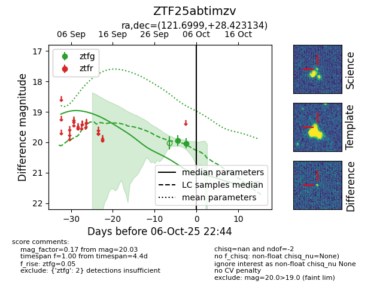
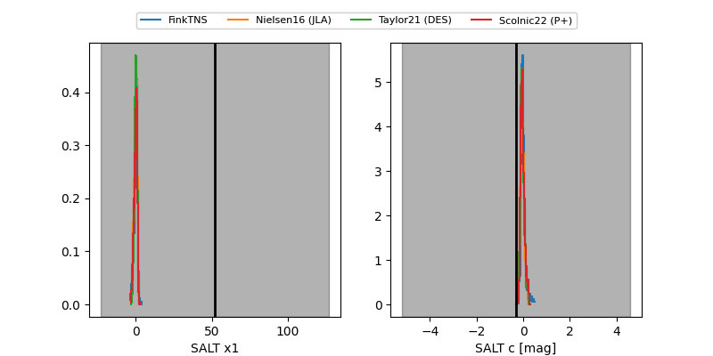

FINK: ZTF25abtimzv
Lasair: ZTF25abtimzv
ALeRCE: ZTF25abtimzv
ZTF25abtimzv (ztf,fink)
equatorial (ra, dec) = (121.6999,+28.42313)
galactic (l, b) = (193.4706,+28.02139)


last ztfg=20.03
2 ztfg detections